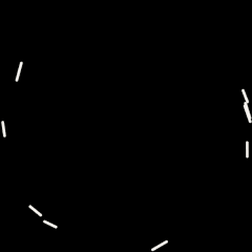

Es el render exacto del firmware (mismo código que corre en la XIAO), 30 fps, de principio a fin: intro KIRO (6.9 s) → los hilos salen de los bordes → nacimiento.

0–2 s hilos escriben KIRO · 2–2.6 KIRO en puntos · 2.6–5.7 colores cambiantes · 5.7–6.9 partículas al punto · 6.9–10.3 trazos gruesos entran desde los bordes, más calmados · después nacimiento.